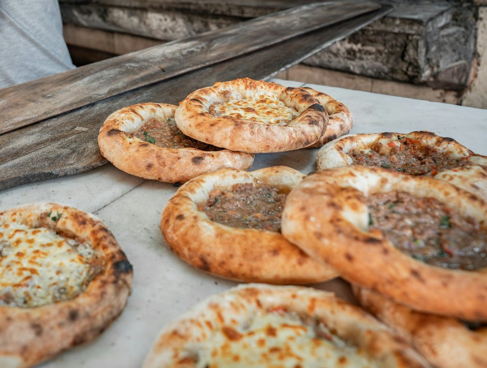

Stage 3 · Hybrid · 2026
ALMAS Restaurant — die gewählte Richtung in zwei Modi
01 / Hybrid · gewählt
Hell.
Die gewählte Richtung im Porcelain-Modus: cinematischer Auftakt, editoriale Ruhe und klare Wege zur Speisekarte. Das Tageslicht für den Alltag.
Seite öffnen

02 / Hybrid · dunkel
Dunkel.
Dieselbe Seite im Obsidian-Modus. Feuer und Fotografie treten hervor, die Inhalte bleiben ruhig. Sonne oder Mond wechselt jederzeit.
Seite öffnen